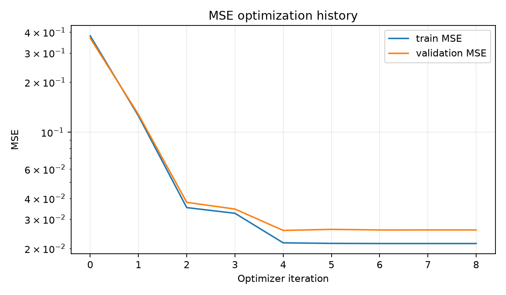
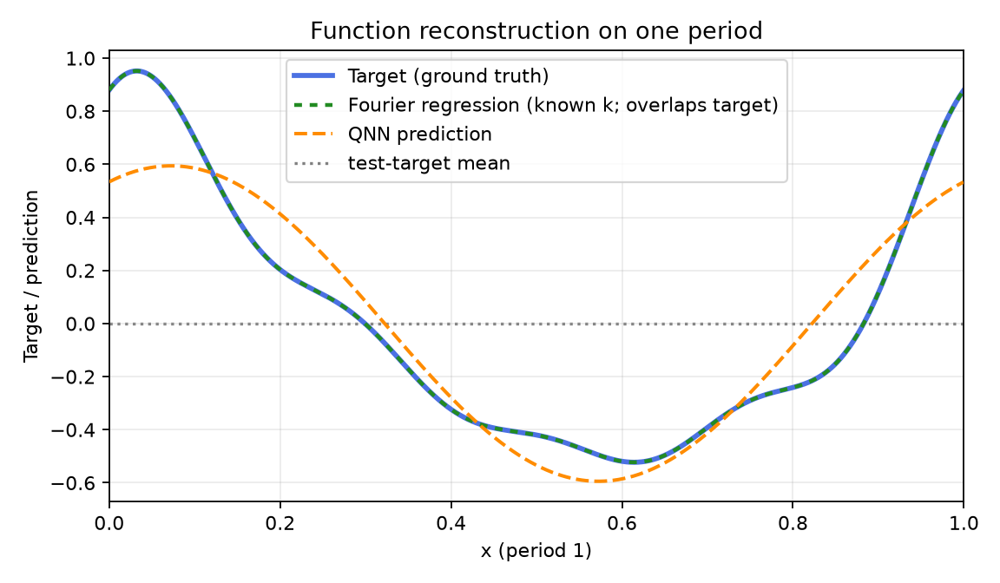
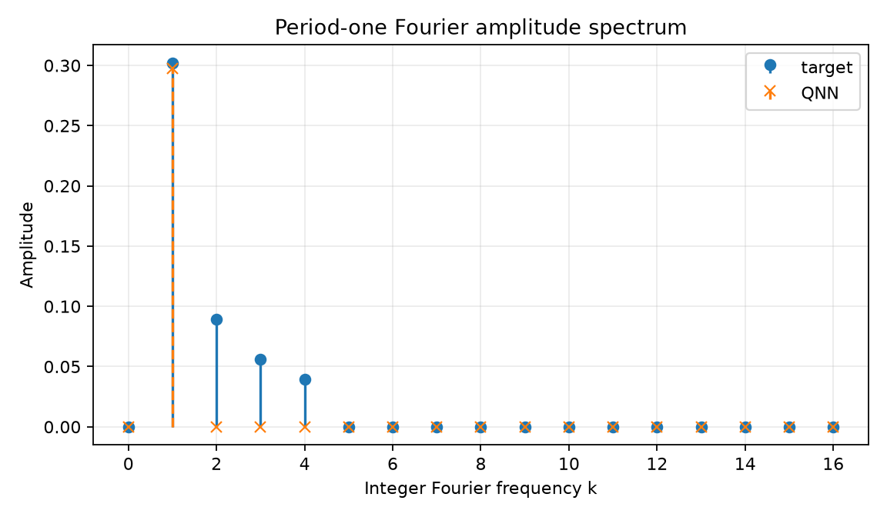
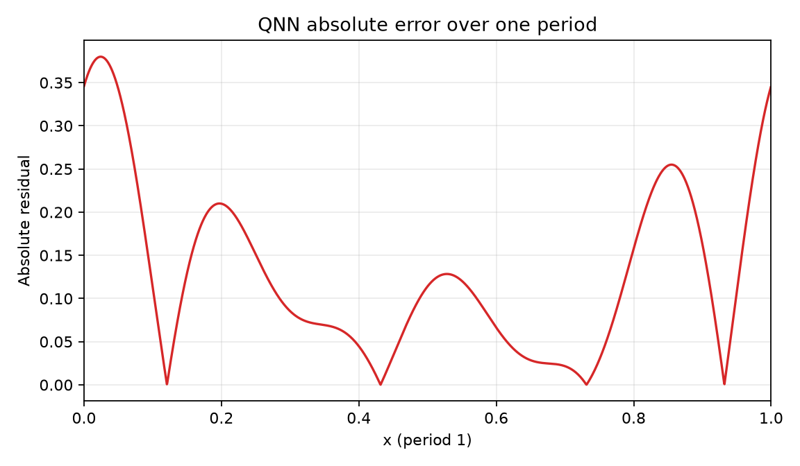
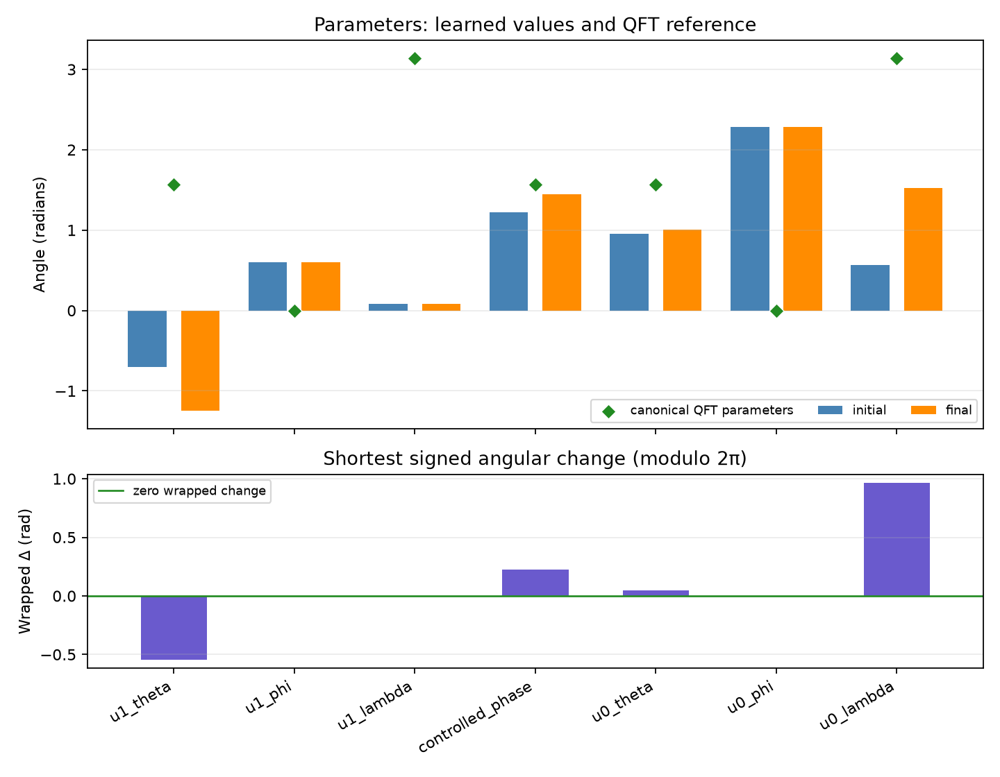

Comparison group: periodic-function-mse-k4-zero-offset-components-ry-angle-encoding-z1-readout
Training loss: MSE only; no Frobenius/process-fidelity term or PINN residual.
Encoding: RY(2πx)|0⟩ on qubit 0, x∈[0,1), period 1.
Readout: ideal Pauli-Z expectation on qubit 1.
Absolute error over one period: mean=0.127015, max=0.380006; defined pointwise as |QNN prediction − target| on the 2048-point periodic grid.
{
"run_id": "20261017T020315316620Z_periodic-function-mse-k4-zero-offset_seed-0048_c5f42dc8",
"status": "FINISHED",
"comparison_group": "periodic-function-mse-k4-zero-offset-components-ry-angle-encoding-z1-readout",
"protocol_version": "0.1.0",
"objective": "training-set mean squared error only",
"loss_excludes": [
"process fidelity",
"Frobenius/unitary alignment",
"PINN/physics residual",
"frequency labels"
],
"encoding": "RY(2*pi*x)|0> on q0; x in [0,1), period 1",
"ansatz": "qft2_trainable_u_cp_u_swap",
"readout": "Pauli-Z expectation on q1",
"seed": 48,
"data_seed": 314159,
"optimizer": "L-BFGS-B",
"dataset_sizes": {
"train": 64,
"validation": 128,
"test": 512
},
"target_offset": 0.0,
"target_components": [
{
"frequency": 1,
"cosine": 0.55,
"sine": 0.25
},
{
"frequency": 2,
"cosine": 0.16,
"sine": 0.08
},
{
"frequency": 3,
"cosine": 0.1,
"sine": 0.05
},
{
"frequency": 4,
"cosine": 0.07,
"sine": 0.035
}
],
"iterations": 8,
"function_evaluations": 88,
"optimizer_success": true,
"optimizer_message": "CONVERGENCE: NORM OF PROJECTED GRADIENT <= PGTOL",
"elapsed_seconds": 0.07260428300651256,
"initial_train_mse": 0.3797116630971138,
"final_train_mse": 0.021412565272450883,
"validation_mse": 0.025840599751922155,
"test": {
"mse": 0.026596856939535507,
"rmse": 0.16308542834826018,
"r2": 0.8710980178526478
},
"constant_baseline_test": {
"mse": 0.21216209706550593,
"rmse": 0.46061056985864524,
"r2": -0.028246116090146156
},
"known_frequency_fourier_baseline_test": {
"mse": 2.8845849053330533e-31,
"rmse": 5.370833180553137e-16,
"r2": 1.0
},
"spectral_coefficient_mse_k0_to_16": 0.0007499733999099159,
"dense_grid_absolute_error_mae": 0.1270149704894014,
"dense_grid_absolute_error_max": 0.3800059468714123,
"target_peak_frequency": 1,
"predicted_peak_frequency": 1,
"frequency_peak_correct": true,
"qft_process_fidelity_diagnostic_only": 0.015131675740850276,
"initial_qft_process_fidelity_diagnostic_only": 0.005913035419745105
}




